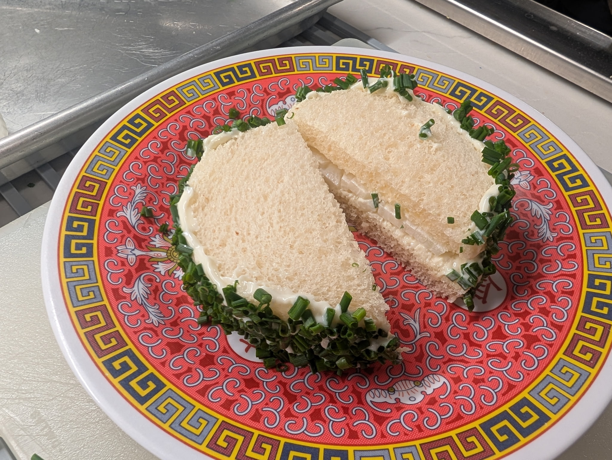

The James Beard Onion Sandwich

Ingredients
- 1 medium onion, sliced whole
- 1 bunch chives, chopped
- 1 tbs mayonnaise
- Kosher salt and black pepper, to taste
- 2 slices white bread
Directions
- Prep: Cut crusts from white bread using a biscuit cutter or glass to form circles. Slice onion crosswise into thin rings.
- Assemble: Spread mayonnaise on one side of each bread round. Add 1-2 whole onion slices and season with salt and pepper. Close sandwich.
- Finish: Coat the outer edge with mayonnaise and roll in chopped chives.
- Serve: Slice in half and serve with a Mimosa
Chef's Notes
The Gumbo Page
Michael Fritsche
mbf@fritsche.org